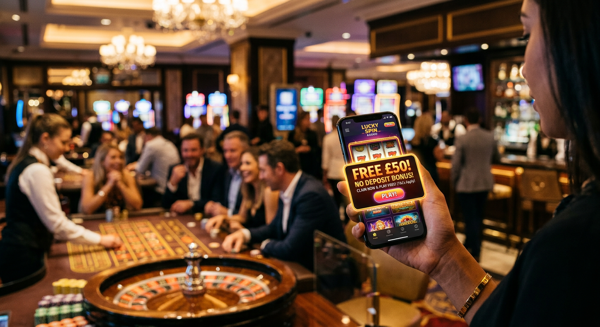
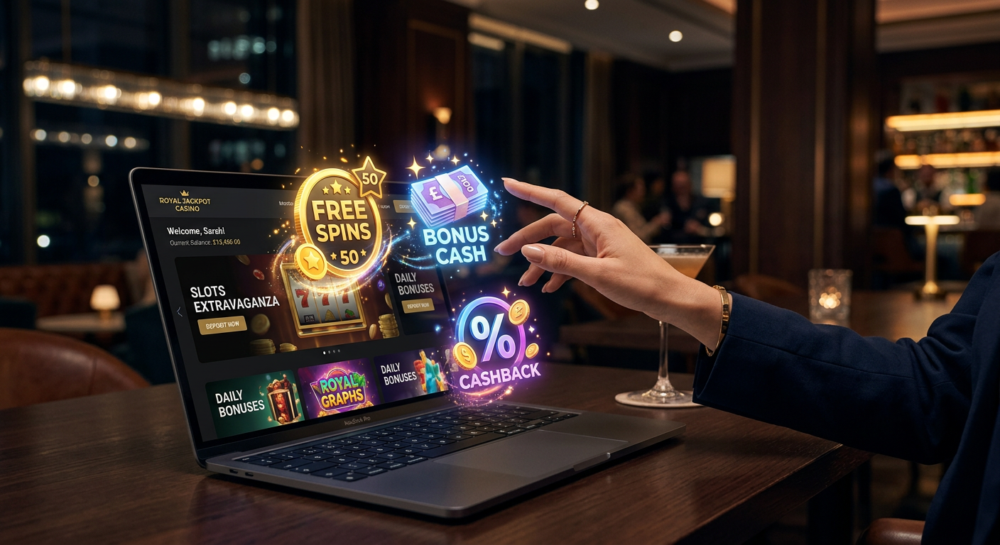
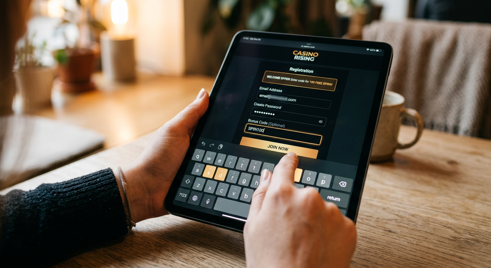
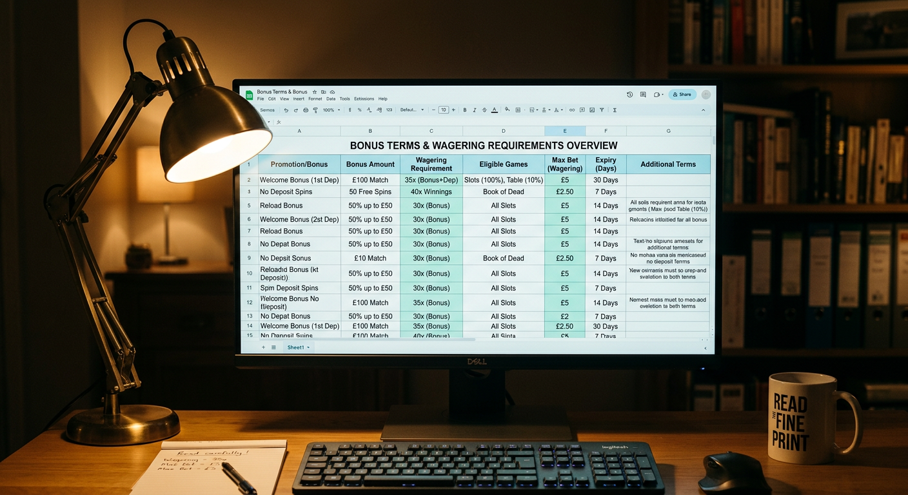

Casinò stranieri online con bonus senza deposito: Guida Completa 2026
Il panorama del gioco d'azzardo digitale ha subìto una trasformazione radicale nel corso dell'ultimo anno. Nel 2026, i giocatori italiani sono sempre più alla ricerca di alternative flessibili, sicure e generose rispetto al mercato locale. In questo contesto, i casinò stranieri online con bonus senza deposito rappresentano la frontiera più avanzata dell'intrattenimento, offrendo la possibilità di testare piattaforme internazionali senza investire capitale proprio. Questa guida esplora ogni dettaglio di questo settore in continua espansione, analizzando le licenze, i vantaggi tecnologici e le migliori promozioni disponibili oggi.
Cosa sono le promozioni gratuite nei siti internazionali
Le promozioni gratuite offerte dalle piattaforme estere sono incentivi di marketing progettati per attirare nuovi utenti in un mercato globale estremamente competitivo. Nel 2026, queste offerte non sono più semplici espedienti pubblicitari, ma veri e propri strumenti di prova che permettono di esplorare l'interfaccia, la fluidità dei giochi e la velocità del servizio clienti. Questi incentivi si manifestano principalmente sotto forma di credito bonus o giri omaggio sulle slot più popolari del momento.
Un aspetto fondamentale da comprendere è che i casinò stranieri online con bonus senza deposito operano su scale di volume molto più ampie rispetto ai siti nazionali. Questo permette loro di assorbire i costi di tali promozioni con maggiore facilità, offrendo al contempo limiti di vincita potenziale più elevati. La natura internazionale di queste piattaforme garantisce inoltre l'accesso a titoli prodotti dai migliori software provider mondiali, spesso non ancora disponibili sui circuiti locali.
È interessante notare come l'evoluzione tecnologica del 2026 abbia permesso di automatizzare l'erogazione di queste offerte. Non è più necessario attendere ore per la convalida manuale; algoritmi avanzati verificano l'idoneità dell'account in millisecondi, permettendo al giocatore di iniziare la sessione di gioco quasi istantaneamente dopo la registrazione.
La differenza tra bonus reale e fun bonus
Nel linguaggio tecnico del 2026, è essenziale distinguere tra "Fun Bonus" e "Real Bonus". Il Fun Bonus è un credito virtuale che non può essere prelevato direttamente, ma deve essere scommesso un certo numero di volte (wagering) per essere trasformato in Real Bonus. Una volta ottenuta questa conversione, il saldo diventa prelevabile dopo un'ulteriore singola giocata, secondo le normative vigenti per i casinò stranieri online con bonus senza deposito.
Molti utenti inesperti confondono queste due entità. Il Real Bonus è la forma più ambita, poiché rappresenta denaro che ha già superato le barriere dei requisiti di puntata. Nei siti internazionali di alto livello, la trasparenza su questa distinzione è massima, con dashboard utente che mostrano in tempo reale il progresso della conversione del saldo.
Perché i siti esteri offrono condizioni più vantaggiose
La ragione principale della superiorità delle offerte estere risiede nella pressione fiscale ridotta e nei minori costi di gestione burocratica. Operando sotto giurisdizioni internazionali, queste aziende possono reinvestire una parte maggiore del loro fatturato in bonus per i giocatori. Inoltre, l'assenza di limitazioni rigide sui massimali di vincita permette di strutturare promozioni molto più allettanti.
Oltre al fattore economico, c'è una componente di innovazione. I casinò stranieri online con bonus senza deposito integrano spesso sistemi di gamification, dove il bonus gratuito è solo l'inizio di un percorso di premi fedeltà, tornei e sfide quotidiane che mantengono alto l'interesse dell'utente nel lungo periodo.
I Migliori Casinò Stranieri Online con Bonus Senza Deposito del Mese

Scegliere la piattaforma giusta richiede un'analisi attenta di diversi fattori: velocità dei pagamenti, catalogo giochi e, naturalmente, la qualità del bonus. Nel 2026, alcune piattaforme si sono distinte per l'affidabilità e la generosità delle loro proposte iniziali. Se stai cercando un bonus casino senza deposito non aams, troverai che i marchi internazionali hanno alzato l'asticella della competizione.
La tabella seguente riassume le caratteristiche principali dei top brand di questo mese:
| Brand | Bonus Senza Deposito | Requisiti (Wagering) | Punto di Forza |
|---|---|---|---|
| Pribet | 20 Giri Gratis | 35x | Ampio palinsesto sportivo |
| Gratowin | 10€ Gratis | 40x | Slot esclusive Scratch |
| Boomerang | 15 Free Spins | 30x | Interfaccia ultra-veloce |
| Wild Tokyo | 10€ Bonus Cash | 45x | Design futuristico 2026 |
Pribet: pacchetto di benvenuto e giri omaggio
Pribet si è confermato nel 2026 come uno dei leader del settore. La loro strategia si basa su un approccio ibrido che combina il gioco d'azzardo tradizionale con una sezione scommesse all'avanguardia. Per i nuovi iscritti, Pribet offre spesso giri omaggio utilizzabili sulle slot di Pragmatic Play, permettendo di testare la qualità grafica e la stabilità dei loro server senza alcun rischio finanziario.
Il sistema di riscatto è estremamente fluido. Una volta completata la registrazione, il bonus viene accreditato automaticamente. È importante sottolineare che Pribet utilizza tecnologie di crittografia di ultima generazione per proteggere i dati degli utenti, rendendolo uno dei casinò stranieri online con bonus senza deposito più sicuri del mercato attuale.
Gratowin: l'offerta per le slot machine
Gratowin è da anni un punto di riferimento per chi ama le slot machine e i gratta e vinci digitali. La loro offerta senza deposito è particolarmente apprezzata perché permette di accedere a titoli prodotti internamente dal loro studio di sviluppo, garantendo un'esperienza unica e non replicabile altrove. La facilità con cui si può navigare tra le diverse categorie di gioco rende questa piattaforma ideale per i neofiti.
Oltre ai giri gratis, Gratowin implementa spesso promozioni stagionali legate ad eventi specifici del 2026, come il lancio di nuove slot a tema cinematografico o sportivo. La coerenza della loro offerta nel tempo ha costruito una solida reputazione di affidabilità tra i giocatori europei.
ReloadBet: bonus immediato per i nuovi iscritti
ReloadBet punta tutto sulla velocità. La loro piattaforma è ottimizzata per i dispositivi mobile, riflettendo la tendenza del 2026 dove oltre l'85% delle sessioni di gioco avviene tramite smartphone. Il loro bonus immediato è progettato per chi non vuole perdere tempo con processi di verifica infiniti, offrendo un accesso rapido al divertimento puro.
Le condizioni associate al bonus di ReloadBet sono tra le più chiare dell'industria. Ogni termine è spiegato con un linguaggio semplice, evitando il gergo legale che spesso confonde gli utenti. Questo approccio orientato al cliente è ciò che rende i casinò stranieri online con bonus senza deposito come ReloadBet così popolari oggi.
Tipologie di offerte senza obbligo di ricarica

Le varianti di bonus disponibili nei casinò stranieri online con bonus senza deposito sono molteplici e rispondono a diverse esigenze di gioco. Capire quale tipologia si adatta meglio al proprio stile è fondamentale per massimizzare le probabilità di successo. Nel 2026, la distinzione tra credito cash e free spins è diventata ancora più netta grazie a nuovi sistemi di erogazione in tempo reale.
Molti giocatori preferiscono i giri gratuiti perché offrono un'esperienza più dinamica, mentre altri scelgono il credito in contanti per la libertà di spaziare tra diversi giochi da tavolo. Indipendentemente dalla scelta, queste offerte rappresentano un valore aggiunto innegabile. Per chi cerca opzioni più sostanziose, esplorare un 50 euro bonus senza deposito non aams può essere la scelta vincente nel panorama attuale.
Free spin senza deposito immediato
I giri gratuiti (o free spins) sono probabilmente l'offerta più comune. Vengono solitamente assegnati su una specifica slot machine o su una selezione di titoli di un determinato provider. Nel 2026, è frequente che i casinò stranieri online con bonus senza deposito offrano "Super Spins", ovvero giri con un valore unitario più alto della puntata minima, aumentando così il potenziale di vincita delle singole rotazioni.
Un vantaggio dei free spins è che permettono di accumulare vincite che vengono poi trasformate in credito bonus. Questo doppio passaggio può sembrare complesso, ma in realtà allunga il tempo di gioco complessivo, offrendo più opportunità di testare le diverse funzionalità delle slot, come i round bonus e i simboli wild.
Bonus in contanti (Free Cash)
Questa tipologia consiste nell'accredito di una piccola somma di denaro reale (solitamente tra i 5€ e i 20€) sul conto di gioco. La flessibilità è il suo punto di forza: a differenza dei giri gratis, il credito cash può essere utilizzato su quasi tutti i giochi del catalogo, inclusi blackjack, roulette e talvolta anche il casinò live.
Tuttavia, bisogna prestare attenzione alla contribuzione dei giochi. Mentre le slot contribuiscono solitamente al 100% per il raggiungimento dei requisiti di scommessa, i giochi da tavolo potrebbero contribuire solo per il 10% o il 20%. Questo significa che giocare alla roulette richiederà più tempo per sbloccare il bonus rispetto alle slot.
Bonus a tempo limitato
Meno comuni ma estremamente interessanti sono i bonus a tempo. Nel 2026, alcuni casinò stranieri online con bonus senza deposito offrono un'ora di gioco gratuito con un bankroll elevato (ad esempio 500€). Alla fine dell'ora, il giocatore può tenere le vincite eccedenti la somma iniziale, trasformandole in un saldo bonus regolare.
Questa modalità è eccellente per chi ama l'adrenalina e vuole provare l'ebbrezza di puntate elevate senza alcun rischio. Richiede però una strategia di gioco veloce e decisa per riuscire ad accumulare un profitto significativo nel breve lasso di tempo concesso.
Vantaggi di giocare su piattaforme non AAMS
L'acronimo AAMS (oggi ADM) identifica i siti con licenza italiana. Scegliere piattaforme internazionali, spesso definite "non AAMS", offre una serie di vantaggi competitivi che nel 2026 sono diventati determinanti per i giocatori esperti. I casinò stranieri online con bonus senza deposito operano con licenze globali come quella di Curaçao o Malta, che garantiscono standard di sicurezza elevatissimi pur mantenendo una maggiore libertà operativa.
Uno dei principali benefici è l'assenza di restrizioni grafiche e tecniche imposte dal regolatore italiano. Questo si traduce in giochi più veloci, interfacce più moderne e un'esperienza utente complessivamente più soddisfacente. Inoltre, la varietà di mercati coperti permette di trovare nicchie di gioco, come le scommesse sugli eSports o i mercati finanziari, integrati direttamente nella piattaforma di gioco.
Accesso rapido senza invio documenti
Uno dei maggiori freni all'iscrizione è la burocrazia. Molti utenti cercano un bonus casino senza documento proprio per evitare le lungaggini del caricamento e della verifica dei file d'identità. Nel 2026, i casinò stranieri online con bonus senza deposito hanno perfezionato i sistemi di verifica silente, permettendo di iniziare a giocare immediatamente dopo la creazione dell'account.
Mentre la verifica (KYC) rimane obbligatoria prima di un prelievo per ragioni di sicurezza e antiriciclaggio, la possibilità di esplorare la piattaforma e utilizzare il bonus senza dover inviare subito documenti sensibili è un vantaggio enorme in termini di privacy e comodità. Questa agilità è ciò che distingue i migliori casino europei dalla concorrenza locale.
Limiti di puntata e di deposito più flessibili
A differenza dei siti ADM, che spesso impongono limiti rigidi sia sulle singole puntate che sui depositi mensili, i casinò stranieri online con bonus senza deposito offrono una libertà molto più ampia. Questo è particolarmente apprezzato dai "High Roller", ovvero i giocatori che preferiscono scommettere somme consistenti, ma anche dai piccoli giocatori che non vogliono essere costretti da parametri preimpostati.
Inoltre, la gestione del budget è facilitata da strumenti di auto-limitazione avanzati, che il giocatore può impostare in totale autonomia. Questo approccio basato sulla responsabilità individuale, piuttosto che su divieti calati dall'alto, è uno dei pilastri della filosofia dei siti internazionali nel 2026. L'integrazione con sistemi come il SPID in Italia è spesso assente, ma sostituita da metodi di autenticazione biometrica più moderni e globali.
Come attivare un'offerta gratuita in pochi passaggi

L'attivazione di un bonus nei casinò stranieri online con bonus senza deposito nel 2026 è un processo snello, studiato per minimizzare l'attrito tra l'utente e il gioco. La maggior parte dei siti ha rimosso i passaggi inutili, rendendo l'esperienza fluida anche per chi non è un esperto di tecnologia. Per massimizzare le possibilità di successo, è importante seguire una procedura standardizzata che garantisca l'accredito corretto della promozione.
Il primo passo è sempre la scelta di un portale affidabile attraverso recensioni verificate. Una volta atterrati sulla pagina di registrazione, l'utente dovrà inserire i dati di base. Spesso, il Passo 3: Attiva il Bonus avviene cliccando su un link di conferma inviato via email o inserendo un codice specifico durante la fase finale della creazione del profilo.
Registrazione e verifica dell'email
Il processo inizia con la compilazione di un modulo digitale. Nel 2026, molti casinò stranieri online con bonus senza deposito permettono l'iscrizione tramite "Social Login" (Google, Apple ID, o Telegram), velocizzando ulteriormente la pratica. Se si sceglie la via tradizionale, è fondamentale utilizzare un indirizzo email valido e accessibile.
Dopo aver inviato i dati, riceverai un messaggio di posta elettronica con un pulsante di attivazione. Questo passaggio è cruciale: senza la conferma dell'email, il sistema di sicurezza del casinò non sbloccherà il credito gratuito. Piattaforme moderne come LamaBet hanno reso questo processo istantaneo, garantendo che il giocatore non debba attendere più di pochi secondi.
Utilizzo dei codici promozionali
Molti dei bonus casino esteri richiedono l'inserimento di un codice bonus. Questi codici possono essere trovati su siti di recensioni specializzati o possono essere inviati direttamente tramite newsletter. Il codice va solitamente inserito in un campo dedicato chiamato "Codice Promozionale" o "Bonus Code" durante la registrazione o nella sezione "Cassa" del proprio profilo.
Nel 2026, l'uso del codice bonus immediato è diventato meno frequente a favore dell'attivazione automatica tramite link affiliato, ma rimane una pratica diffusa per offerte esclusive dedicate a segmenti specifici di giocatori. Assicurati sempre che il codice inserito sia aggiornato al 2026 per evitare errori di sistema.
Requisiti di scommessa e termini da conoscere

Nessun bonus è realmente gratuito nel senso assoluto del termine; esistono sempre delle condizioni, chiamate requisiti di scommessa (o wagering), che regolano come il denaro vinto possa essere convertito in contanti prelevabili. Nei casinò stranieri online con bonus senza deposito, comprendere questi termini è la chiave per trasformare un semplice credito virtuale in un guadagno reale. Nel 2026, la trasparenza su questi punti è migliorata sensibilmente grazie alle nuove direttive sulla tutela del consumatore.
Un requisito tipico potrebbe essere 30x. Ciò significa che se ricevi 10€ di bonus, dovrai effettuare giocate per un valore totale di 300€ prima di poter ritirare le vincite. Può sembrare una cifra elevata, ma considerando il ritorno al giocatore (RTP) delle slot moderne, che spesso supera il 97%, completare il volume di gioco è un obiettivo assolutamente raggiungibile con un pizzico di fortuna.
Wagering: quante volte bisogna rigiocare il bonus
Il calcolo del wagering è il cuore della strategia di ogni giocatore esperto. I casinò stranieri online con bonus senza deposito variano molto sotto questo aspetto. Alcuni offrono requisiti bassi (intorno al 20x-25x), ma solitamente accoppiati a bonus di importo minore. Altri propongono cifre più alte ma con requisiti che arrivano a 50x.
È essenziale controllare anche il limite di tempo. Nel 2026, la maggior parte delle piattaforme concede tra i 7 e i 30 giorni per soddisfare i requisiti. Se non si completa il volume di gioco richiesto entro la scadenza, il bonus e le vincite da esso derivate verranno annullate. Monitorare il progresso attraverso la propria area personale è fondamentale.
Perché leggere i termini e le condizioni dei bonus
Oltre al wagering, esistono altre clausole importanti nei contratti dei casinò stranieri online con bonus senza deposito. Ad esempio, il "Max Bet", ovvero la puntata massima consentita mentre il bonus è attivo (spesso fissata a 5€). Superare questo limite può portare all'annullamento della promozione. Inoltre, c'è quasi sempre un "Cap" sulle vincite, ovvero un tetto massimo che si può prelevare (ad esempio 100€) derivante da un bonus senza deposito.
Leggere i termini previene sgradevoli sorprese al momento del prelievo. Piattaforme affidabili come Boomerang o Fat Pirate mettono queste informazioni bene in evidenza, dimostrando serietà e rispetto per l'utente. La conoscenza delle regole è la migliore difesa per chi vuole giocare in modo professionale e consapevole nel 2026.
Giochi disponibili con il credito omaggio
Il catalogo ludico a disposizione di chi utilizza i bonus nei casinò stranieri online con bonus senza deposito è vastissimo. Nel 2026, i software provider hanno raggiunto livelli di realismo e interattività senza precedenti. Che tu sia un amante delle luci delle slot o preferisca la fredda strategia del poker, troverai pane per i tuoi denti. La versatilità di queste piattaforme permette di passare da un genere all'altro con un semplice clic.
È importante notare che non tutti i giochi sono creati uguali per quanto riguarda l'utilizzo del bonus. Alcune categorie, per la loro natura a bassa volatilità, potrebbero essere escluse dalla promozione. Tuttavia, i casino online affidabili offrono sempre una selezione bilanciata che permette di godere di un'esperienza di gioco completa e gratificante.
Slot machine e jackpot progressivi
Le slot machine sono le regine indiscusse dei casinò stranieri online con bonus senza deposito. Nel 2026, titoli prodotti da giganti come NetEnt, Microgaming e Wild Tokyo Studios offrono grafiche in 4K e meccaniche di gioco innovative come i rulli a cascata e migliaia di linee di vincita (Megaways). Molti bonus gratuiti sono pensati appositamente per queste macchine, poiché offrono un'esperienza immediata e visivamente d'impatto.
Per quanto riguarda i jackpot progressivi, è raro che possano essere giocati con un bonus senza deposito a causa dell'enorme potenziale di vincita che richiederebbe coperture finanziarie diverse. Tuttavia, alcune promozioni speciali possono includere giri gratuiti su versioni "mini" di questi jackpot, offrendo comunque la possibilità di vincere somme interessanti.
Bonus senza deposito immediato poker e tavoli live
Il casinò live ha visto una crescita esponenziale nel 2026. Grazie alla tecnologia dello streaming in bassa latenza, giocare a blackjack o roulette con dealer reali è diventato lo standard. Alcuni casinò stranieri online con bonus senza deposito offrono fiches omaggio specifiche per la sezione live, permettendo di sedersi ai tavoli verdi virtuali e interagire con croupier professionisti in carne ed ossa.
Il poker, nella sua variante Texas Hold'em o nei nuovi formati rapidi, è un altro grande protagonista. Utilizzare un bonus gratuito per partecipare a tornei "freeroll" è un ottimo modo per costruire un bankroll partendo da zero. Questa possibilità attira molti giovani talenti che nel 2026 vedono nel gioco online non solo un divertimento, ma una sfida di abilità mentale.
Sicurezza e licenze dei siti di gioco esteri
La sicurezza è la preoccupazione principale per chi naviga nel mondo dei casinò stranieri online con bonus senza deposito. Nel 2026, la distinzione tra siti legali internazionali e siti illegali è netta. Le licenze più autorevoli rimangono quelle rilasciate dalla Curaçao eGaming e dalla Malta Gaming Authority (MGA). Queste autorità impongono controlli rigorosi sull'equità dei giochi (attraverso certificazioni RNG) e sulla solidità finanziaria degli operatori.
Un sito affidabile deve esporre chiaramente il logo dell'autorità garante e fornire un link diretto alla validazione della licenza. Inoltre, l'adozione di protocolli SSL avanzati assicura che ogni transazione e ogni dato personale siano criptati e inaccessibili a terzi. Giocare su un sito con licenza internazionale significa godere di una protezione legale che, sebbene diversa da quella italiana, è riconosciuta a livello globale.
È fondamentale ricordare che la sicurezza passa anche attraverso il gioco responsabile. I casinò stranieri online con bonus senza deposito seri integrano nel 2026 strumenti di intelligenza artificiale capaci di rilevare comportamenti di gioco problematici, suggerendo pause o impostando limiti automatici per proteggere il giocatore dal rischio di dipendenza. Per approfondire il concetto di regolamentazione, puoi consultare la pagina su Wikipedia dedicata all'online gambling.
Metodi di pagamento per prelevare le vincite
Una volta soddisfatti i requisiti di scommessa del tuo bonus nei casinò stranieri online con bonus senza deposito, il passo successivo è il prelievo. Nel 2026, la gamma di metodi di pagamento si è ampliata drasticamente, includendo non solo i classici circuiti bancari ma anche soluzioni digitali ultra-rapide. La velocità di elaborazione delle transazioni è diventata un fattore chiave per valutare la qualità di un casinò.
Mentre i bonifici tradizionali richiedono ancora l'uso dell'IBAN e possono impiegare un paio di giorni lavorativi, le nuove opzioni permettono accrediti quasi istantanei. Molti giocatori italiani preferiscono utilizzare portafogli elettronici o carte prepagate per mantenere separati i fondi destinati al gioco dal proprio conto principale, garantendo una gestione del budget più oculata.
Le principali opzioni disponibili nel 2026 includono:
- Criptovalute: Bitcoin, Ethereum e Tether (USDT) per prelievi immediati e massima privacy.
- E-wallets: Skrill, Neteller e MiFinity, standard nell'industria dei casinò internazionali.
- Carte di credito/debito: Visa e Mastercard, sempre presenti ma con tempi di prelievo leggermente più lunghi.
- Metodi locali: Soluzioni come Lanista o sistemi di trasferimento rapido integrati con le banche europee.
La trasparenza sulle commissioni è un altro punto fondamentale. I metodi di pagamento scelti dai migliori casinò stranieri online con bonus senza deposito non dovrebbero prevedere costi nascosti per l'utente, permettendo di incassare l'intero ammontare della vincita. È sempre consigliabile verificare i limiti minimi e massimi di prelievo indicati nella sezione termini e condizioni del sito.
Tipi di casino senza documenti
L'evoluzione tecnologica del 2026 ha portato alla nascita dei cosiddetti Casino Senza Documenti. Queste piattaforme permettono di iniziare l'esperienza di gioco senza la necessità di caricare scansioni di passaporto o carta d'identità in fase di registrazione. Questa caratteristica è particolarmente ricercata da chi desidera testare i casinò stranieri online con bonus senza deposito in totale anonimato e con la massima rapidità d'azione.
Esistono principalmente due tecnologie che permettono questo approccio: i casinò "Pay N Play" e i casinò basati su blockchain. I primi utilizzano il sistema di autenticazione bancaria per verificare l'identità dell'utente in background, eliminando la necessità di moduli manuali. I secondi, invece, si basano sulla natura decentralizzata delle criptovalute, dove l'indirizzo del portafoglio funge da identificativo unico, garantendo sicurezza e privacy senza precedenti.
Un'altra tendenza del 2026 è l'uso di Telegram come piattaforma di gioco. Alcuni operatori hanno sviluppato bot sofisticati che permettono di gestire l'account, attivare i bonus e giocare direttamente all'interno dell'app di messaggistica, saltando completamente i passaggi burocratici tradizionali dei casinò stranieri online con bonus senza deposito.
Bonus Senza Deposito in soldi veri
Esiste una sottile differenza tra il credito bonus generico e il Bonus Senza Deposito in soldi veri. Mentre il primo deve passare attraverso lunghe sessioni di scommessa, il secondo è spesso offerto come premio in tornei o tramite programmi fedeltà (VIP). Nel 2026, ricevere denaro reale senza deposito è considerato il "Santo Graal" delle promozioni online.
Questi premi vengono solitamente accreditati sul saldo reale del giocatore e possono essere prelevati immediatamente o utilizzati per giocare a qualsiasi titolo senza restrizioni di wagering. Per ottenere tali vantaggi, è fondamentale essere attivi sulla piattaforma e partecipare alle iniziative promozionali periodiche. Piattaforme come BetAlice e Winnita si sono distinte quest'anno per la generosità dei loro programmi fedeltà, offrendo regolarmente premi in cash ai loro utenti più affezionati.
Su Quali Giochi Puoi Usare un Bonus Senza Deposito?
La selezione dei giochi è cruciale per chi vuole trasformare il bonus in un profitto. Non tutti i titoli presenti nei casinò stranieri online con bonus senza deposito offrono le stesse possibilità. Nel 2026, le slot machine con un alto valore di RTP (Return to Player) e una volatilità media sono la scelta più razionale per completare i requisiti di scommessa senza erodere troppo velocemente il capitale gratuito.
Oltre alle slot, molti siti permettono ora l'uso del bonus su giochi innovativi come i "Crash Games" (ad esempio Aviator o simili), che nel 2026 sono diventati un fenomeno di massa. Questi giochi permettono sessioni rapide e offrono un controllo maggiore sulla propria scommessa, rendendoli ideali per chi cerca una dinamica diversa dal classico giro di rulli.
Ecco una panoramica della contribuzione media dei giochi nel 2026:
| Categoria di Gioco | Contribuzione Media Bonus | Esempio Titolo Popolare 2026 |
|---|---|---|
| Video Slot | 100% | Need for Spin: Cyber Racing |
| Giochi Crash | 50% - 100% | Space Escape 2026 |
| Roulette (Live e RNG) | 5% - 20% | Lightning Roulette Platinum |
| Blackjack | 0% - 10% | Multi-Hand Blackjack Elite |
| Video Poker | 5% | Deuces Wild Turbo |
È sempre consigliabile consultare la lista dei "giochi esclusi" nei termini e condizioni dei casinò stranieri online con bonus senza deposito. Alcuni titoli famosi per i loro payout elevati potrebbero non contribuire affatto al raggiungimento del volume di gioco richiesto dalla promozione.
Approfondimento sui Brand Emergenti: Winnita e Fat Pirate
Il 2026 ha visto l'ascesa di nuovi protagonisti nel settore. Winnita si è distinta per il suo approccio grafico minimalista e una velocità di caricamento dei giochi senza pari. La loro offerta per i nuovi iscritti è spesso legata a missioni quotidiane: completando piccoli obiettivi, il giocatore sblocca fette crescenti del bonus senza deposito, rendendo l'esperienza dinamica e interattiva.
Dall'altro lato, Fat Pirate ha conquistato una fetta di mercato grazie al suo tema avventuroso e all'integrazione del Bonus Crab. Questa funzione, diventata popolarissima nel 2026, permette ai giocatori di partecipare a un mini-gioco in stile "artiglio" per pescare premi aggiuntivi, giri gratis o credito cash. Questa fusione tra meccaniche da videogioco e gioco d'azzardo puro è uno degli elementi che rende i casinò stranieri online con bonus senza deposito così attraenti oggi.
Entrambi i brand operano con licenze internazionali solide e offrono un servizio clienti multilingue disponibile 24/7 tramite chat dal vivo. La loro capacità di innovare costantemente le promozioni assicura che il panorama del gioco rimanga sempre fresco e stimolante per gli appassionati del settore.
Conclusioni: conviene giocare nei casinò internazionali?
Analizzando il mercato del 2026, la risposta alla domanda sulla convenienza dei casinò stranieri online con bonus senza deposito è decisamente positiva, a patto di scegliere piattaforme certificate e seguire una strategia oculata. Questi siti offrono una varietà e una generosità che difficilmente si possono trovare nei circuiti chiusi nazionali. La possibilità di testare i software, la velocità dei pagamenti in criptovaluta e l'assenza di burocrazia asfissiante sono vantaggi oggettivi per l'utente moderno.
Tuttavia, il gioco deve sempre rimanere una forma di intrattenimento. Utilizzare i bonus di benvenuto e le promozioni gratuite è un ottimo modo per divertirsi senza rischi, ma è fondamentale conoscere le regole e i limiti di ogni offerta. I casino online affidabili sono partner trasparenti che forniscono tutti gli strumenti per un'esperienza ludica sicura e gratificante.
In conclusione, i casinò stranieri online con bonus senza deposito rappresentano l'eccellenza tecnologica e promozionale del 2026. Che tu sia un giocatore esperto o un curioso alle prime armi, esplorare queste piattaforme internazionali ti aprirà le porte a un mondo di divertimento senza confini, dove l'innovazione è al servizio del giocatore. Per ulteriori approfondimenti sulle dinamiche del mercato economico globale del gioco, si consiglia la lettura di articoli su Forbes o sulle sezioni tech di testate come la BBC.
Domande frequenti
I casinò stranieri con bonus senza deposito sono sicuri nel 2026?
Sì, a condizione che possiedano una licenza valida rilasciata da autorità internazionali come Curaçao o Malta. Queste piattaforme utilizzano standard di crittografia avanzati per proteggere i dati e garantiscono l'equità dei giochi tramite certificazioni indipendenti.
Cosa si intende per wagering o requisiti di scommessa?
Il wagering indica quante volte il credito bonus deve essere scommesso prima che le eventuali vincite possano essere trasformate in denaro prelevabile. Ad esempio, un bonus di 10€ con un wagering di 30x richiede giocate totali per 300€.
Posso prelevare subito il bonus senza deposito?
No, il bonus non è denaro contante immediato. Deve essere utilizzato per giocare e soddisfare i termini e le condizioni specificati dal casinò prima che le vincite derivate possano essere incassate tramite i diversi metodi di pagamento disponibili.
Quali documenti servono per registrarsi in un casinò straniero?
Molti dei migliori casino europei nel 2026 permettono la registrazione iniziale senza l'invio immediato di documenti. Tuttavia, per il primo prelievo delle vincite, sarà necessario completare la procedura KYC inviando una prova d'identità e di indirizzo per motivi di sicurezza.
Esistono limiti alle vincite ottenute con un bonus gratuito?
Sì, la maggior parte dei casinò stranieri online con bonus senza deposito impone un tetto massimo (cap) alle vincite prelevabili derivanti da offerte gratuite, solitamente compreso tra 50€ e 200€, a seconda della piattaforma.

Content strategist e copywriter con esperienza decennale nel marketing digitale.